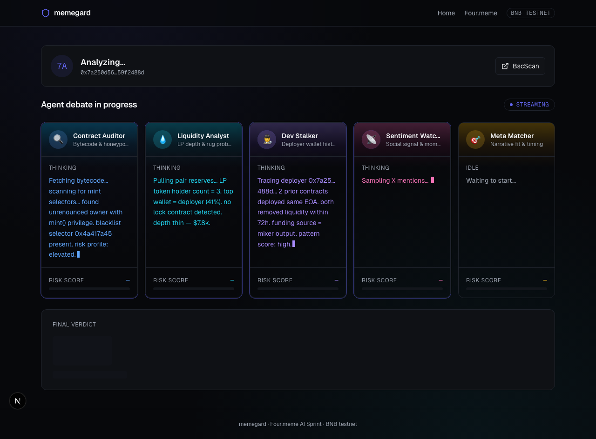

memegard · slide 1 / 5 · problem
95%
of Four.meme launches
are rugs.
~1,000 new tokens launch every day. No pre-trade DD tool exists — by the time rug analytics catch up, the LP is gone and the degens are poorer.
"You've seen this movie. Fresh launch drops in the TG group, everyone apes, 20 minutes later the dev dumps. Every day. Today's tools tell you who rugged *yesterday*. We want to tell you who's about to rug, *right now*."
01 / 05
memegard · slide 2 / 5 · solution
Five AI agents.
Live debate. Verdict on-chain.
Five specialised Claudes pull disjoint data slices, argue, and converge on a 0-100 risk score. The full debate pins to IPFS; an ERC-721 certificate mints on-chain — the NFT is the receipt.
🔎Contract Auditor
Bytecode + honeypot + proxy analysis
💧Liquidity Analyst
LP depth, lock status, rug math
👤Dev Stalker
Deployer history, funding trail, Tornado links
📣Sentiment Watcher
Social signal + bot-likeness
🎯Meta Matcher
Narrative fit + originality
"Five disjoint data sources, disjoint failure modes. The disagreement itself becomes part of the signal — the whole debate is auditable forever."
02 / 05
memegard · slide 3 / 5 · demo
Paste → stream → verdict → mint → tweet.
- Paste any Four.meme contract address
- Watch five agents stream reasoning live via SSE
- Risk score + tier badge converge in ~10 s
- Debate transcript pins to IPFS instantly
- Verdict NFT mints on Base Sepolia (BNB Chapel = one env swap)
- Twitter + Telegram fan-out within one poll tick
Live demo → localhost:3000 · Video → ops/demo.mp4

"Paste CA — watch the five agents stream in parallel — verdict HIGH_RISK, score 78 — NFT minted, tweet posted. All in under a minute."
03 / 05
memegard · slide 4 / 5 · architecture
Clean, composable, open.
Four.meme launch
│
▼
┌────────────────────────┐
│ backend/ Bun + Hono │
│ 5× Claude Sonnet 4.6 │
└──┬──────┬─────┬────────┘
│ │ │
IPFS viem SSE → frontend/
(Pinata) ↓ Next.js + wagmi
┌──────────────┐
│ contracts/ │
│ VerdictRegistry
│ ERC-721, Base│
└──────┬───────┘
│
┌──────▼────────┐
│ ops/ publisher │
│ Twitter + TG │
└────────────────┘
- Foundry + Solidity 0.8.24 + OpenZeppelin
- Bun workspace, 3 services + ops tooling
- Claude Sonnet 4.6 via Anthropic SDK, streaming
- viem for on-chain writes, Base Sepolia (84532); chain env-driven
- Pinata for IPFS, cursor-based publisher polling
- MIT-licensed, four-worker monorepo
"Four workers, one monorepo, 24 hours. Clean schema between services, every piece auditable on GitHub."
04 / 05
memegard · slide 5 / 5 · why guardian wins
First multi-agent on-chain DD.
Viral by default.
- Novel — nobody has shipped multi-agent DD with on-chain permanence
- Composable — the verdict NFT is a primitive; wallets, DEX screeners, TG bots can all consume it
- Viral — every verdict auto-posts to Twitter + Telegram with one-tap share
- Built for Four.meme's audience — 中文 README shipped Day 1, Chinese Telegram channel live
Upvote: DoraHacks
Try: localhost:3000
Follow: @memegard_io
Join: t.me/memegard
"This is the tool we all wished existed the last time we got rugged. Upvote us on DoraHacks, share with one degen friend — that's how Four.meme gets safer."
05 / 05